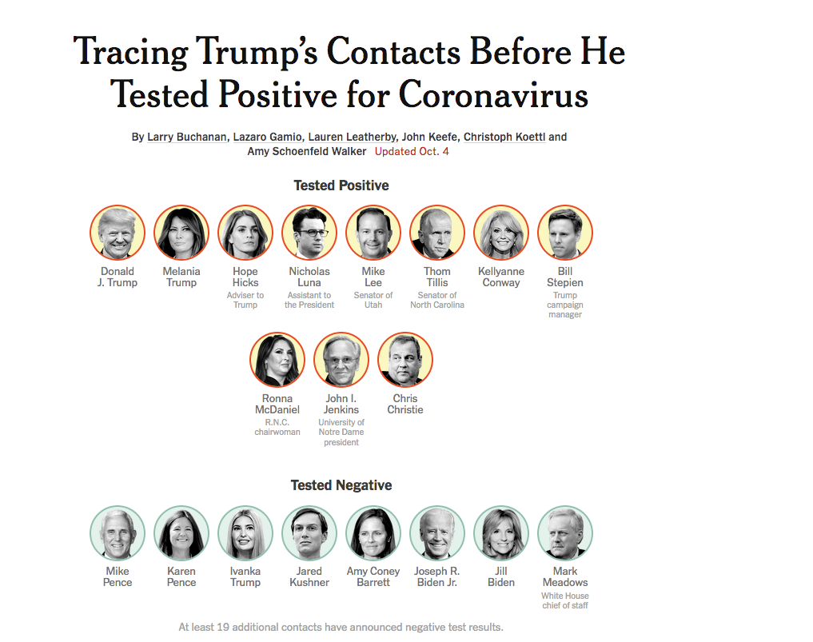

Day 30
Published last at 3:20pm CDT October 4 2020, subject to change throughout the day.
The news surrounding Trump's COVID condition has ranged from Republicans claiming Trump has "no co-morbidities" (even though, at age 74 Trump is very much at heightened risk) to Dr. Sean Conley informing the world that Trump is receiving dexamethasone, which is a "steroid usually given to patients with sever COVID19".
The confusing and contradictory information surrounding Trump's health status continues to demonstrate the overall lack of coherency that has come to mark this administration and campaign. As of the writing of this post, NYT lists 10 individuals who had contact with Trump before his positive status have contracted COVID10:

Others like Mitch McConnell follow suite who, on Friday, refused to confirm if he's been tested. Ron Johnson too showed balatant disregard by attenting an Oktoberfest Party while awaiting his results. The future of the Trump campaign as well as the overall Republican strategy is bound to continue to amp up their campaign of misdirection.
Amy Coney Barret's nomination celebration will go down in history as the gender reveal party that burned down the Republican party.
— Frank Lesser (@sadmonsters) October 3, 2020
In other news, though, after Trump's intentional sidestepping of condeming White Supremacy and White Supremacist groups like Proud Boys at last week's Presidential Debate, the queer community this past weekend has reclaimed the Twitter #ProudBoys to showcase the beauty of LGBTQI couples embracing in various moments of love and unity. Now this is pride! 🌈👬🏿🌈👬🏽🌈👬🏼!
MEOOOOOOOOOOW #ProudBoys https://t.co/Dk01OCLvQ8
— Loooorena "La BRUJA Tigresa” Mesa @ #BLM 🖤 (@loooorenanicole) October 4, 2020
Only 30 days until Election 2020 everyone. Get out and vote vote vote!
News
- Election 2020 - COVID impact on Trump Campaign Vanity Faiur - “This Is Spiraling Out of Control”: Allies Panic About Trump’s Hospital Stay as White House Deflects
- Election 2020 - Cook County Illinois Voting Guide - Girl, I Guess - A Progressive Voter Guide to the 2020 General Election in Cook County and Beyond
- SCOTUS - Supreme Court Appointment The Hill - Klobuchar calls for postponement of Supreme Court hearing: 'We don't know how many other Republican senators had' COVID-19
- COVID19 - Relief Status Washington Post - https://www.washingtonpost.com/us-policy/2020/10/04/coronavirus-white-house-pelosi-economic-stimulus/
- COVID19 - More spikes in NYC POLITICO - New York City to shut down 9 neighborhoods as coronavirus spikes
Events
- On October 5th Higher Ground Labs at 4:00pm CT is hosting a "The Importance of the Latinx Vote in 2020" with Virgina Tech's Latino Association of Student Organizations (LASO). RSVP today!
- October 7th at 08:00pm CT the Vice Presidential Debate between Democratic VP Candidate Harris and Pence. I cannot wait to see Harris dominate! And yes, the Biden campaign has asked for stricter health measures, including 12 feet distancing since the Repulican campaign does not seem to understand basic social distancing and other COVID reventative measures. How to watch information here.
- October 8th at 6:00pm CT Haymarket Books is hosting a Teach-In with Naomi Klein and Johann Hari on "Trump's Shock Election Politics - And How to Fightt What He Does Next". RSVP here.
Call to Action
- Tomorrow, Monday October 5th is National Voter Registration Day - VOTE VOTE VOTE!
- Get your flu shot, here's a list of where to get it.
Just for fun
Hell yes to WAP aka - Woman as President 😉
"American needs a WAP - Woman as President - but for now I'll settle for HVPIC - Hot Vice President in Charge".
SNL with Maya Rudolph as VP Candidate Harris, I'm here for it!